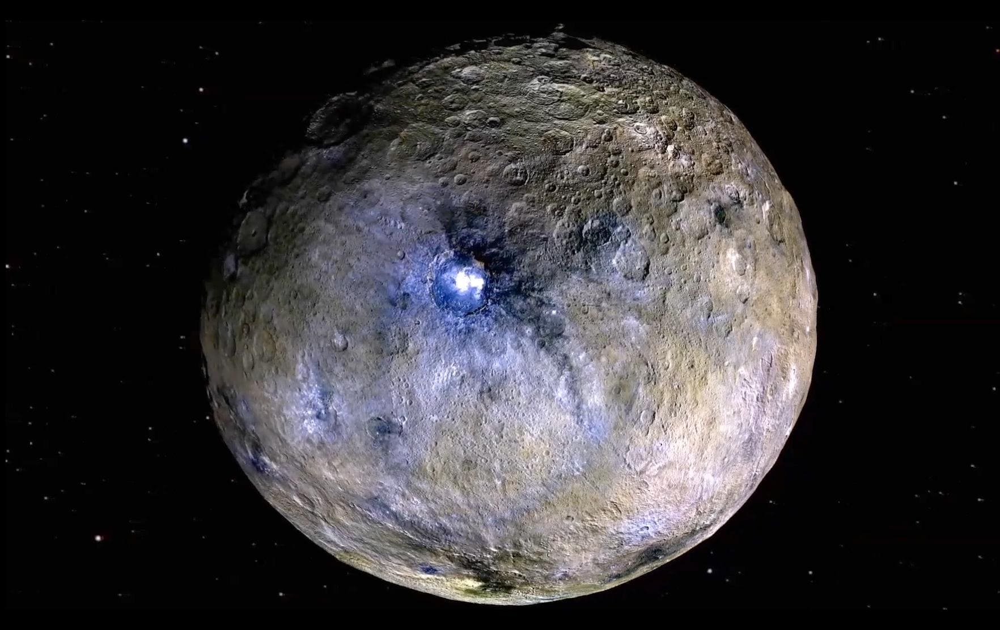
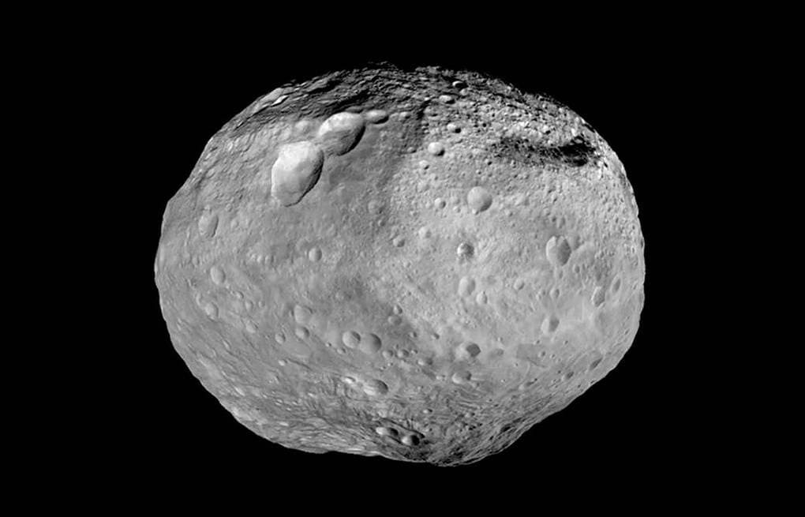
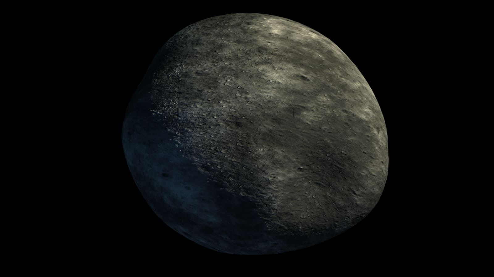
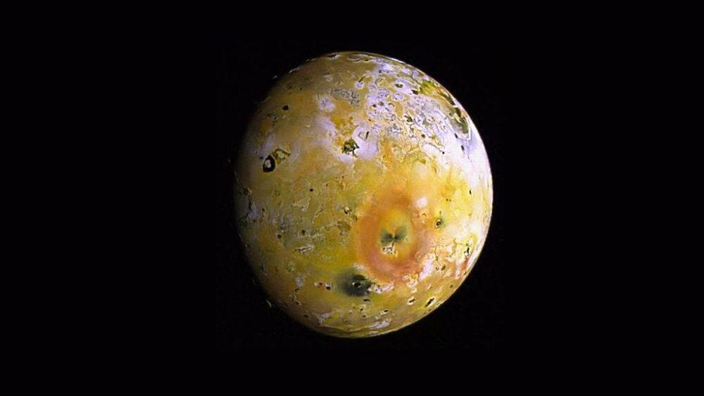
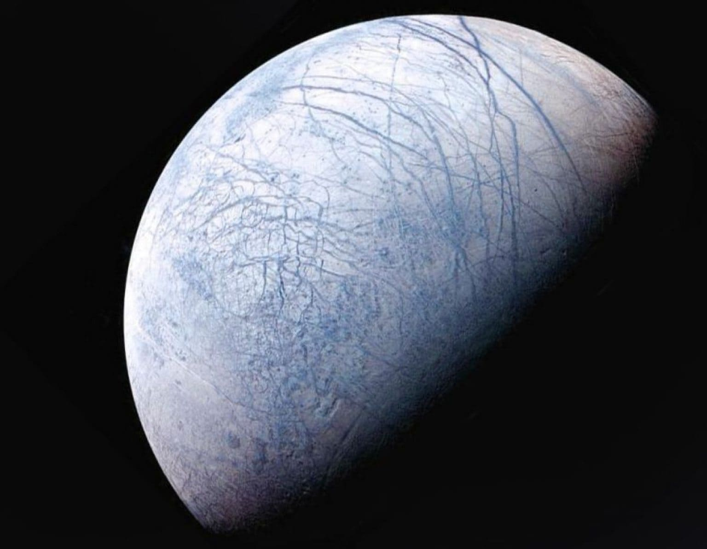
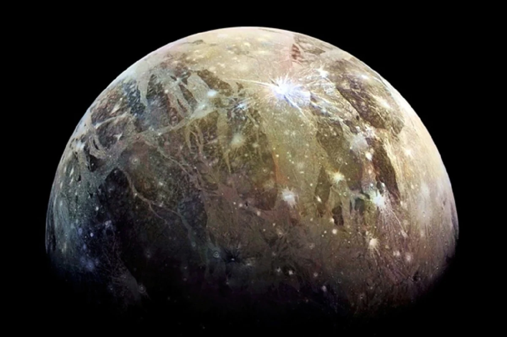
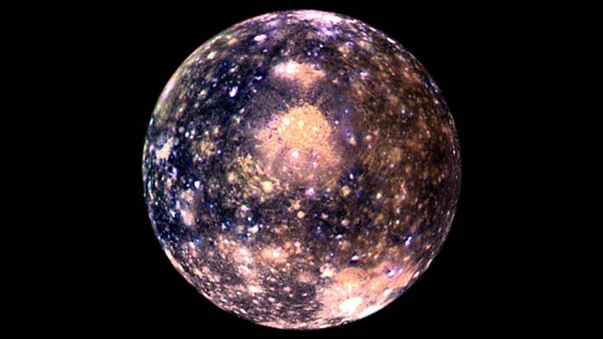

system
 Alpha
AlphaCentauri
 Trappist
Trappistsystem
 Trebia
Trebiasystem

The Solar System is the gravitationally bound system of the Sun and the objects that orbit it. It formed 4.6 billion years ago from the gravitational collapse of a giant interstellar molecular cloud. The vast majority of the system's mass is in the Sun, with most of the remaining mass contained in the planet Jupiter.
The Sun is the star at the center of the Solar System. It is a nearly perfect ball of hot plasma, heated to incandescence by nuclear fusion reactions in its core. The Sun radiates this energy mainly as light, ultraviolet, and infrared radiation, and is the most important source of energy for life on Earth.


Earth is the third planet from the Sun and the only astronomical object known to harbor life. While large volumes of water can be found throughout the Solar System, only Earth sustains liquid surface water. About 71% of Earth's surface is made up of the ocean, dwarfing Earth's polar ice, lakes, and rivers. The remaining 29% of Earth's surface is land, consisting of continents and islands.
Humans emerged 300,000 years ago, and have reached a population of almost 8 billion today. Humans depend on Earth's biosphere and natural resources for their survival, but have increasingly impacted Earth's environment.
Today, humanity's impact on Earth's climate, soils, waters, and ecosystems is unsustainable, threatening people's lives and causing widespread extinction of other life.
The Modern English word Earth developed, via Middle English, from an Old English noun most often spelled eorde. It has cognates in every Germanic language, and their ancestral root has been reconstructed. In its earliest attestation, the word eorde was already being used to translate the many senses of Latin terra and Greek: the ground, its soil, dry land, the human world, the surface of the world (including the sea), and the globe itself. As with Roman Terra/Tellus and Greek Gaia, Earth may have been a personified goddess in Germanic paganism: late Norse mythology included Jord ('Earth'), a giantess often given as the mother of Thor.
Mars is the fourth planet from the Sun and the second-smallest planet in the Solar System, being larger than only Mercury. In the English language, Mars is named for the Roman god of war. Mars is a terrestrial planet with a thin atmosphere (less than 1% that of Earth's), and has a crust primarily composed of elements similar to Earth's crust, as well as a core made of iron and nickel.

During the late nineteenth century, it was widely accepted in the astronomical community that Mars had life-supporting qualities, including the presence of oxygen and water. However, in 1894 W. W. Campbell at Lick Observatory observed the planet and found that "if water vapor or oxygen occur in the atmosphere of Mars it is in quantities too small to be detected by spectroscopes then available". That observation contradicted many of the measurements of the time and was not widely accepted. Campbell and V. M. Slipher repeated the study in 1909 using better instruments, but with the same results. It wasn't until the findings were confirmed by W. S. Adams in 1925 that the myth of the Earth-like habitability of Mars was finally broken. However, even in the 1960s, articles were published on Martian biology, putting aside explanations other than life for the seasonal changes on Mars. Detailed scenarios for the metabolism and chemical cycles for a functional ecosystem were being published as late as 1962.
Venus is the second planet from the Sun. It is sometimes called Earth's "sister" or "twin" planet as it is almost as large and has a similar composition. As an interior planet to Earth, Venus (like Mercury) appears in Earth's sky never far from the Sun, either as morning star or evening star. Aside from the Sun and Moon, Venus is the brightest natural object in Earth's sky.


Mercury is the smallest planet in the Solar System and the closest to the Sun. Its orbit around the Sun takes 87.97 Earth days, the shortest of all the Sun's planets. It is named after the Roman god Mercurius (Mercury), god of commerce, messenger of the gods, and mediator between gods and mortals, corresponding to the Greek god Hermes.

Mercury rotates in a way that is unique in the Solar System. It is tidally locked with the Sun in a 3:2 spin–orbit resonance, meaning that relative to the fixed stars, it rotates on its axis exactly three times for every two revolutions it makes around the Sun. As seen from the Sun, in a frame of reference that rotates with the orbital motion, it appears to rotate only once every two Mercurian years. An observer on Mercury would therefore see only one day every two Mercurian years.
Saturn is the sixth planet from the Sun and the second-largest in the Solar System, after Jupiter. It is a gas giant with an average radius of about nine and a half times that of Earth. It has only one-eighth the average density of Earth; however, with its larger volume, Saturn is over 95 times more massive. Saturn's interior is most likely composed of a core of iron–nickel and rock (silicon and oxygen compounds).
The planet's most notable feature is its prominent ring system, which is composed mainly of ice particles, with a smaller amount of rocky debris and dust. At least 83 moons are known to orbit Saturn, of which 53 are officially named; this does not include the hundreds of moonlets in its rings. Titan, Saturn's largest moon and the second largest in the Solar System, is larger than the planet Mercury, although less massive, and is the only moon in the Solar System to have a substantial atmosphere.
Jupiter is the fifth planet from the Sun and the largest in the Solar System. It is a gas giant with a mass more than two and a half times that of all the other planets in the Solar System combined, but slightly less than one-thousandth the mass of the Sun. Jupiter is the third brightest natural object in the Earth's night sky after the Moon and Venus, and it has been observed since prehistoric times. It was named after the Roman god Jupiter, the king of the gods.

Sound of Jupiter
Neptune is the eighth planet from the Sun and the farthest known solar planet. In the Solar System, it is the fourth-largest planet by diameter, the third-most-massive planet, and the densest giant planet. It is 17 times the mass of Earth, and slightly more massive than its near-twin Uranus. Neptune is denser and physically smaller than Uranus because its greater mass causes more gravitational compression of its atmosphere.


Uranus is the seventh planet from the Sun. Its name is a reference to the Greek god of the sky, Uranus, who, according to Greek mythology, was the great-grandfather of Ares, grandfather of Zeus and father of Cronus. It has the third-largest planetary radius and fourth-largest planetary mass in the Solar System. Uranus is similar in composition to Neptune.


It has the coldest planetary atmosphere in the Solar System, with a minimum temperature of 49 K (-224 °C; -371 °F), and has a complex, layered cloud structure with water thought to make up the lowest clouds and methane the uppermost layer of clouds. The interior of Uranus is mainly composed of ices and rock.
The Moon is Earth's only natural satellite. Its diameter is about one-quarter the diameter of the Earth. The Moon is the fifth largest satellite in the Solar System. It is larger than any of the known dwarf planets and is the largest satellite relative to its parent planet. ons of the term. It lacks any significant atmosphere, hydrosphere, or magnetic field.

The asteroid belt is a torus-shaped region in the Solar System, located roughly between the orbits of the planets Jupiter and Mars. It contains a great many solid, irregularly shaped bodies, of many sizes, but much smaller than planets, called asteroids or minor planets.
Ceres (minor-planet. Designation: 1 Ceres) is a dwarf planet in the asteroid belt between the orbits of Mars and Jupiter. It was the first asteroid discovered, on 1 January 1801, by Giuseppe Piazzi at Palermo Astronomical Observatory in Sicily, and announced as a new planet. Ceres was later classified as an asteroid and then as a dwarf planet – the only one always inside Neptune's orbit.
Vesta (minor-planet designation: 4 Vesta) is one of the largest objects in the asteroid belt, with a mean diameter of 525 kilometres (326 mi). It was discovered by the German astronomer Heinrich Wilhelm Matthias Olbers on 29 March 1807 and is named after Vesta, the virgin goddess of home and hearth from Roman mythology.
Pallas (minor-planet designation: 2 Pallas) is the second asteroid to have been discovered, after Ceres. It is believed to have a mineral composition similar to carbonaceous chondrite meteorites, like Ceres, though significantly less hydrated than Ceres. It is the third-largest asteroid in the Solar System by both volume and mass, and is a likely remnant protoplanet. It is 79% the mass of Vesta and 22% the mass of Ceres, constituting an estimated 7% of the mass of the asteroid belt.
There are 80 known moons of Jupiter, not counting a number of moonlets likely shed from the inner moons. All together, they form a satellite system which is called the Jovian system. The most massive of the moons are the four Galilean moons: Io, Europa, Ganymede, and Callisto, which were independently discovered in 1610 by Galileo Galilei and Simon Marius and were the first objects found to orbit a body that was neither Earth nor the Sun.
Io, or Jupiter I, is the innermost and third-largest of the four Galilean moons of the planet Jupiter. Slightly larger than Earth's moon, Io is the fourth-largest moon in the Solar System, has the highest density of any moon, the strongest surface gravity of any moon, and the lowest amount of water (by atomic ratio) of any known astronomical object in the Solar System.
Europa, or Jupiter II, is the smallest of the four Galilean moons orbiting Jupiter, and the sixth-closest to the planet of all the 80 known moons of Jupiter. It is also the sixth-largest moon in the Solar System. Europa was discovered in 1610 by Galileo Galilei and was named after Europa, the Phoenician mother of King Minos of Crete and lover of Zeus (the Greek equivalent of the Roman god Jupiter).
Ganymede, a satellite of Jupiter (Jupiter III), is the largest and most massive of the Solar System's moons. The ninth-largest object (including the Sun) of the Solar System, it is the largest without a substantial atmosphere (albeit not the most massive one, this is Mercury). It has a diameter of 5,268 km (3,273 mi), making it 26 percent larger than the planet Mercury by volume, although it is only 45 percent as massive. Possessing a metallic core, it has the lowest moment of inertia factor of any solid body in the Solar System and is the only moon known to have a magnetic field.
Callisto, or Jupiter IV, is the second-largest moon of Jupiter, after Ganymede. It is the third-largest moon in the Solar System after Ganymede and Saturn's largest moon Titan, and the largest object in the Solar System that may not be properly differentiated. Callisto was discovered in 1610 by Galileo Galilei. With a diameter of 4821 km, Callisto is about 99% the diameter of the planet Mercury, but only about a third of its mass.
